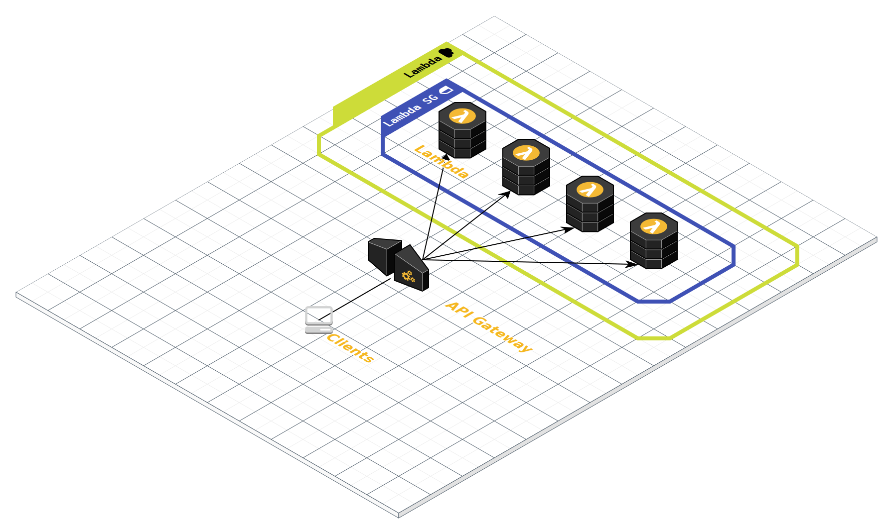

Serverless Websocket APIs
About me:
Enric Soler Rastrollo
& Developer
What is a websocket?
The Websocket protocol enables a 2-way communication between 2 ends (a client and a server) based on RFC-6455. Nowadays, all browers have natively support from websocket.
Uses

Traditional example

Why serverless?


- Pay per use
- No administration
- Auto-scaling
- Increases development speed
API Gateway
API Gateway allows you to create, maintain, and secure APIs at any scale
Features
- Easy creation of API (REST or Websokets)
- Resilient
- Versioning
- Monitoring
- Security
Serverless example
API Gateway Details
Route selection
$request.body.actionAssign Lambda to routes
$connect
$disconnect
$default
Example
Route selection configuration
# Api Gateway Route Selection Expression
websocketsApiName: ${self:provider.stage}-${self:service}
websocketsApiRouteSelectionExpression: $request.body.action
# Lambda configuration
functions:
connectHandler:
handler: {handler.connectHandler | handler.messageHandler}
events:
- websocket: {$connect | $disconnect | message}
Sending messages to clients...
const { APIGatewayManagementAPI } = require('aws-sdk');
// ... Content removed for brevity
const { domainName, stage } = requestContext;
const apiGateway = new APIGatewayManagementAPI({
endpoint: `${domainName}/${stage}`,
});
/**
** Send to all the users we want user connection IDs
** stored in Dynamo for example ;)
**/
await apiGateway.postToConnection({
ConnectionId: connectionId,
Data: JSON.stringify({ action: 'message', /* ... */ }),
}).promise();
DEMO
Thank you for your attention
Q & A